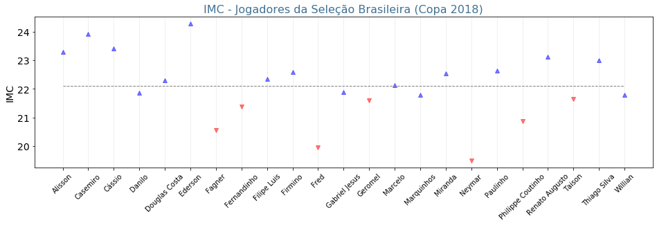

Laboratório Computacional 4¶
No laboratório computacional, você praticará o que aprendeu. Resolva os problemas com o auxílio do Python pesquisando apenas as informações essenciais de que precisa. Não use respostas prontas.
Problema (Índice de Massa Corpórea - IMC): O IMC é usado para saber se um indivíduo está no peso ideal. Ele é definido pela fórmula
onde \(M\) é a massa (considere quilogramas) do indivíduo e \(A\) é a sua altura (considere metros). Um indíviduo tem peso normal se seu IMC estiver no intervalo faixa \(18.5 \leq IMC < 25.0\).
A seleção brasileira masculina de futebol profissional convocada para a Copa do Mundo 2018 era composta de 23 jogadores, a saber: Alisson, Casemiro, Cássio, Danilo, Douglas Costa, Ederson, Fagner, Fernandinho, Filipe Luis, Firmino, Fred, Gabriel Jesus, Geromel, Marcelo, Marquinhos, Miranda, Neymar, Paulinho, Philippe Coutinho, Renato Augusto, Taison, Thiago Silva e Willian.
O arquivo data/copa2018.npy, disponibilizado juntamente com este arquivo, contém uma tabela de peso, altura e idade de cada um desses atletas.
O gráfico abaixo plota o valor do IMC para cada um desses jogadores. Todos os jogadores possuem peso ideal, mas a linha tracejada divide-os em dois grupos:
Grupo 1: aqueles na faixa ideal cujo IMC é menor do que 21.7.
Grupo 2: aqueles na faixa ideal cujo IMC é maior do que 21.7.

Carregue as informações do arquivo e reproduza o gráfico da figura anterior ou crie um similar estilizando-o do seu modo que contenha:
a linha tracejada intermediária;
marcadores coloridos de modo distinto;
eixo com os nomes dos jogadores;
linhas de grade;
Obs.: Use a função do numpy load('...'), com a opção allow_pickle=True.
Problema (Taxa Metabólica Basal - TMB): A TMB é a quantidade mínima de energia que o ser humano, em repouso, precisa para sobreviver. A Equação de Mifflin - St. Jeor para calcular a TMB em kcal/dia (quilocalorias por dia) de pessoas do sexo masculino é dada por:
onde \(M\) é a massa do indivíduo, \(A\) sua altura e \(I\) sua idade.
Usando a equação de Mifflin - St. Jeor:
calcule a energia necessária total para a manutenção vital de todos os jogadores da seleção de 2018 durante um ano inteiro, isto é, a TMB anual. Considere 1 ano = 365 dias.
calcule a TMB anual do time inteiro para o quinquenio 2020 - 2024. Assuma o início do período em 1 de janeiro de 2020 e que nenhuma alteração na escalação do time ocorrerá no período.
plote um gráfico em que o eixo
xdeve corresponder ao quinquênio e o eixoyao total da TMB para todos os jogadores em cada ano. Use marcadores do tipo'o'.qual é o valor total em kcal no final de 2024?
Obs: Note que a idade dos jogadores se altera com o tempo. Isto é, após o quinquênio estarão 5 anos mais velhos e a TMB para cada um será diferente a cada ano.
Problema (Movimento de bola de futebol): O movimento executado por uma bola de futebol ao ser chutada a partir do campo por um jogador é similar ao movimento parabólico de um projétil. A velocidade da bola \(V_b\) pode ser calculada pela expressão:
onde \(V_p\) é a velocidade da perna do chutador, \(M_p\) é a massa da perna do chutador, \(M_b\) é a massa da bola e \(e\) é o coeficiente de restituição da bola.
O alcance \(a\) é a medida horizontal máxima que a bola atinge a partir do ponto de lançamento de acordo com um certo ângulo em que é lançada. Como conhecemos da Física Básica, a fórmula para o alcance é dada por:
Diante disso, considere os seguintes dados:
A massa da bola de futebol profissional é de 400 gramas e seu coeficiente de restituição é 0.7.
A massa da perna de um jogador equivale a 10% de sua massa.
A velocidade da perna de um jogador é de 20 m/s.
A constante gravitacional equivale a 9.8 m/s2.
Assuma que um campo de futebol profissional “padrão FIFA” possui área de 100 x 68 m2. Além disso, defina um Whole-Field Kicker (WFK) o jogador que, chutando uma bola a um ângulo de 45 graus, consegue transportá-la de gol a gol, ou seja de uma linha de fundo a outra, e como Not Whole-Field Kicker (not WFK) aquele que não consegue realizar esta proeza.
Usando os dados disponíveis na tabela dos jogadores da seleção de 2018:
determine os jogadores que são “WFK” e os “not WFK”, bem como a quantidade de jogadores em cada classe.
determine quem é o WFK do time que chuta mais longe.
determine qual é o menor alcance entre os chutes.
plote um gráfico do tipo jogador x alcance, colorindo os “not WFK” com marcadores com borda vermelha e cor de face branca.